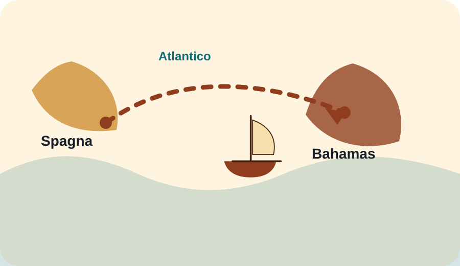

La partenza
La spedizione lasciò Palos con tre navi. L’obiettivo dichiarato era raggiungere l’Asia navigando verso ovest.
Agosto 1492 - marzo 1493
Tre navi, un progetto rischioso e una rotta che avrebbe collegato stabilmente l’Europa con il continente americano.

Colombo partì da Palos il 3 agosto 1492 con tre navi: Santa María, Niña e Pinta. Dopo una sosta alle Canarie, attraversò l’Atlantico e raggiunse Guanahani, nelle Bahamas, il 12 ottobre 1492.
Cronologia interattiva
Clicca sulle date per evidenziare il momento corrispondente.
La spedizione lasciò Palos con tre navi. L’obiettivo dichiarato era raggiungere l’Asia navigando verso ovest.
L’equipaggio affrontò incertezza, paura e lunghi giorni di navigazione senza avvistare terra.
La terra avvistata era un’isola delle Bahamas, chiamata Guanahani dagli abitanti locali e San Salvador da Colombo.
Colombo rientrò in Spagna nel 1493, convinto di aver raggiunto terre vicine all’Asia.
Nave ammiraglia della spedizione. Si incagliò nei Caraibi nel dicembre 1492.
Una delle due caravelle, agile e adatta alla navigazione oceanica.
Caravella veloce, associata all’avvistamento della terra durante il viaggio.